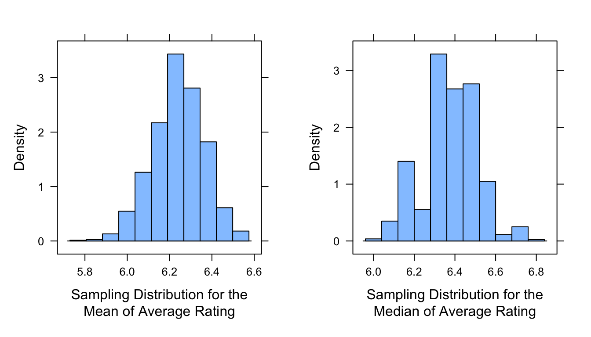

The objective of this module is to review some key terms and ideas that form the foundation of statistics and statistical inference. In particular, this module considers ways for describing distributions of data, particularly measures of central tendency and spread (i.e., variation) in our observations of a variable, which play an important role in both descriptive statistics and in various approaches to statistical hypothesis testing.
Population - all of the elements from a set of data (e.g., all of the gorillas in the world) = N
Sample - one or more observations drawn from a population by some kind of sampling process (e.g., the set of gorillas living in Rwanda, the set of gorilla skeletons found in a museum) = n
NOTE: We often assume that a sampling process is random, but there are lots of ways in which sampling might be biased, thus the samples we work with may not be (and often are not) random samples!
Parameter - a measurable characteristic of a population that summarizes data (e.g., the mean value of the femur length of all gorillas)
NOTE: Population means for a given variable, x, are often indicated as \(\mu_x\)
Statistic - a measurable characteristic about a sample that summarizes data (e.g., the mean femur length of gorilla femurs found at the American Museum of Natural History)
NOTE: Sample means for a given variable, x, are often indicated as \(\bar{x}\)
When we use statistical methods or attempt statistical inference - whether using a null hypothesis significance testing (NHST) framework or using Bayesian approaches - we are basically trying to estimate and draw conclusions about population-level parameters and processes and their distributions based on observations or measurements we take from a sample. Sometimes, we are simply trying evaluate whether it is reasonable to assume that our sample is drawn from a population with particular characteristics. Other times, we may be trying to understand what variables explain variation we see in a response measure of interest or be trying to evaluate which among a set of alternative models best predicts a given response.
Regardless, we should always keep in mind that the process of trying to draw conclusions about a population based on a sample can be complicated by the fact that…
our sample may be biased, non-random, or non-representative in some way
there may be unknown or unobserved variables that impact how the sample is related to the population
the assumptions we make about the population that our sample is drawn from might not be correct
12.4 Describing Sets of Observations
It is important for us to be able to describe the general characteristics of the distribution of a set of observations or measurements about a population or a sample, and we often do this by calculating some measure(s) of central tendency and some measure(s) of spread around that statistic. The “five-number summary” that we have talked about previously is doing basically just this.
Measures of Central Tendency
Median - the middle value in a rank ordered series of values
Mean - the sum of measured values divided by \(n\), a.k.a., the average or the arithimetic mean
Mode - the most common measurement of values observed
Harmonic mean - the reciprocal of the average of the reciprocals of a set of values
The measures above are relevant to summarizing observations about processes that are additive.
Geometric mean - a measure of central tendency for processes that are exponential (e.g., some phases of population growth in natural populations) or multiplicative (e.g., increases in area or volume that accompany increases in linear dimension) in nature, rather than additive = the \(n^{th}\) root of the product of the values, taken across a set of \(n\) values; for the mathematically inclined, it also equals the antilog of the averaged log values
CHALLENGE:
Given a vector, x <- c(1,2,3,4,5,6,7,8,9,10,25,50,100,200,1000), write your own function to determine the geometric mean of the values in a vector. Remember the general form for functions is: <function name> <- function(<arguments>) {<code>}
HINT: Taking the \(n^{th}\) root of a number is equivalent to raising the number to the power of \(\frac{1}{n}\)
What happens if you have NAs or zeros or negative numbers in your vector?
HINT: Including an na.rm=TRUE argument and the function na.omit() in your function code to ignore data points with values may help you write more generic functions!
Measures of Spread
In addition to measures of central tendency, measures of spread or variability in the distribution of variables of interest are some of the most important summary statistics to calculate. The total range (min to max) is one measure of spread, as is the interquartile range (25th to 75th quartile), which as we have seen are both part of the “five-number summary”.
We more commonly characterize spread, however, in terms of some measure of the deviation of a set of values from the mean of those values. One such measure is the sum of squares…
Sum of Squares = the sum of the squared deviations of a set of values from the mean of that set
NOTE: Why do we use the sum of the squared deviations of values from the mean rather than just the sum of deviations? Because the latter would simply be ZERO!
CHALLENGE:
Write a function to calculate the sum of squares for a vector.
# This is equivalent to...sum_of_squares <-function(x) {sum(x^2) -length(x) *mean(x)^2}sum_of_squares(x)
## [1] 917183.3
A shortcut to calculate the sum of squares for a vector, x, that does not actually require calculating mean(x) is the (sum of the squared values in the dataset) minus the (square of the summed values) / n, or…
Note that the sum of squares always increases with sample size… you can see this by adding more data points to your vector. Thus, to be able to compare across data sets of different size, we are often more interested in the average deviation of values from the mean rather than the straight sum of squares, i.e., a mean squared deviation.
This is the definition of the variability or variance in a dataset. If we are simply interested in describing the mean squared deviation in a population, where we have a value or measurement for every case (e.g., the femur length of all of the gorillas in a museum population), we could then just divide the sum of squares by the number of cases.
Population Variance (\(\sigma^2\)) = \(\frac{SS}{N}\)
If, however, we have not measured all of the individual cases in population - i.e., if we are, instead, dealing with a sample from the population and are trying to use that sample to say something about the population from which it is drawn (e.g., to say something about gorilla femur lengths in general based on those that appear in a museum sample) - then we need to use a slightly different formula to get an unbiased estimate of the population variance. Such an estimate for a population parameter, based on data from a sample, is calculated as:
Sample Variance (an estimator of the population variance) = \(\frac{SS}{n-1}\)
In this formula, \(n - 1\) is the number of degrees of freedom implied by the sample. The degrees of freedom is the number of values used to calculate a sample statistic that are “free to vary”. For example, we used n observations to calculate the mean of our sample, which implies \(n - 1\) degrees of freedom (i.e., if we know the mean and \(n - 1\) values, then we also know the last value… it is not “free to vary”). We then use that statistic about our sample (i.e., the sample mean) as an estimate of the population mean, which is then used to derive an estimate of the population variance based on the sample variance.
CHALLENGE:
Write a function to calculate the variance for a vector of values representing a sample of measurements. Remember this means dividing the sample sum of squares by \(n-1\).
Compare the results of your function to the built-in R function, var(), which calculates sample variance.
Code
var(x)
## [1] 65513.1
Questions to Explore
For a random variable, how is variance related to sample size?
We will explore this, and at the same time practice a bit about loops in R programming, via simulation, where we repeatedly draw samples of random variables from a specific distribution. As an example, we will we draw from a normal distribution with a mean of 10 and a standard deviation of 2.
To visualize this distribution, we can use the plotDist() function from the {mosaic} package…
# `plotDist()` comes from the {mosaic} package and makes it easy to plot a# distribution
In the following code block, we first set up a plot window to hold the results of our simulations and plot a line for the known population variance (i.e., the square of \(\sigma\), the standard deviation). We then use nested for loops to iterate the process of drawing samples of a specific size, \(n\), from the specified distribution. We do this for samples of size \(n\) = 5, 10, 15… up to 100, and we draw out 50 replicates of each sample size. Recall from Module 11 that the structure for for loops is:
for (<index> in <range>){
<code to execute>
}
# set up plot windowplot(c(0, 100), c(0, 15), type ="n", xlab ="Sample Size", ylab ="Variance")# add the population variance (= square of population standard deviation) to# the plotabline(h =4, col ="red", lwd =2, lty =2)# run simulations and add results to plotmu <-10sigma <-2# samples of 5, 10, 15...for (n inseq(from =5, to =100, by =5)) {# set up a variable, reps, to hold the set of variances calculated for each# replicate reps <-vector("double", 50)# 50 replicatesfor (i in1:50) { x <-rnorm(n, mean = mu, sd = sigma)points(n, var(x)) reps[[i]] =var(x)# this is a common programming motif in R and is more memory and time# efficient than another common motif, `reps <- c(reps, var(x))` }points(n, mean(reps), bg ="red", pch =23, cex =2) # plots average}
How does sample variance compare to population variance? What happens to the sample variances as sample size increases?
Another measure of spread around a mean that we often see reported is the standard deviation. The standard deviation is simply the square root of the variance (\(\sqrt{\sigma^2} = \sigma\)). The advantage of using the standard deviation as a statistic or parameter is that the units of standard deviation are the same as the units of our original measurement (rather than being units squared, which are our units for variance).
In R we can write…
x <-rnorm(1000, mean =10, sd =2)pop_sd <-function(x) {sqrt(pop_var(x))}pop_sd(x)
The sdpop() function from the {radiant} package can be used to calculate the standard deviation for a completely sampled population.
library(radiant)sdpop(x)
## [1] 1.948445
detach(package:radiant)
The built-in R function sd() can be used to calculate the standard deviation of a sample.
sd(x)
## [1] 1.94942
12.5 Using Measures of Spread
Sampling Distributions
Since one of the goals of statistics is to estimate and make inferences about population-level parameters based on characteristics of a sample, it is important that we be able to judge and report just how reliable or unreliable our statistical estimates those population-level parameters are.
To explore how we do this, let’s start with a population where we KNOW every data point. We will use that first to describe our population empirically. We will then draw samples out of that population and see how well that the samples we draw can be used to describe the population.
Load the “IMDB-movies.csv” dataset from the ada-2022-datasets repository on GitHub as a “tibble”, d. This dataset contains data on close to 29,000 movies scraped in early 2020 from the online Internet Movie Database, including their year of title, director, year of production, running time, average viewer rating on a 10 point scale, and the number of votes that rating is based on. [Note that in collating this data, I excluded movies with fewer than 1000 votes.] Once we load the data, we will filter the dataset to keep only movies with a startYear from 1999 to 2019, which should leave us with 17,628 movies. We are going to use this dataset as our POPULATION.
f <-"https://raw.githubusercontent.com/difiore/ada-2022-datasets/main/IMDB-movies.csv"d <-read_csv(f, col_names =TRUE)d <-filter(d, startYear %in%1999:2019) # the %in% operator is VERY useful!head(d)
## # A tibble: 6 × 10
## tconst titleType primaryTitle startYear runtimeMinutes genres averageRating
## <chr> <chr> <chr> <dbl> <dbl> <chr> <dbl>
## 1 tt0035423 movie Kate & Leop… 2001 118 Comed… 6.4
## 2 tt0069049 movie The Other S… 2018 122 Drama 6.8
## 3 tt0111068 movie Sangharsh 1999 127 Actio… 6.8
## 4 tt0112444 movie My Teacher'… 1999 89 Comed… 5.5
## 5 tt0113026 movie The Fantast… 2000 86 Music… 5.6
## 6 tt0118589 movie Glitter 2001 104 Drama… 2.2
## # ℹ 3 more variables: numVotes <dbl>, nconst <chr>, director <chr>
First, we will do some exploratory data analysis on this dataset using, in part, some functions from the {mosaic} package. {mosaic} makes some kinds of quick exploratory data analysis very fast and easy to do (though we already know how to do lots of what we can do with {mosaic} in other ways)!
Functions in the {mosaic} package have a data= argument as well as a ~ argument that specifies which variable of interest from the data= argument the function is to be applied to.
# the `histogram()` function from {mosaic} plots neat 'augmented' histogramshistogram(~averageRating, data = d, xlab ="Average Rating")
# the `favstats()` function from {mosiac} calculates a variant of the 5-number# summary(pop_stats <-favstats(~averageRating, data = d))
## min Q1 median Q3 max mean sd n missing
## 1 5.6 6.4 7.1 9.9 6.238972 1.160221 17628 0
Now, let’s draw a single SAMPLE of 100 movies randomly from this population and visualize its average viewer rating. After setting the random number seed (analogous to setting what position we start at in a traditional table of random numbers), run the subsequent lines of code several times and look at how the results differ…
NOTE: We use set.seed() here so that each time this function is run, it returns the same sequence of random numbers until the seed is reset.
set.seed(1)
n <-100s <-sample_n(d, size = n, replace =FALSE)# `sample_n()` from {dplyr} selects rows at random from a data frame it's# another SUPER useful functiontable(s$startYear)
histogram(~averageRating, data = s, xlab ="Average Rating")
(samp_stats <-favstats(~averageRating, data = s))
## min Q1 median Q3 max mean sd n missing
## 3.3 5.5 6.45 7 8.5 6.325 1.004673 100 0
Note that each time we select a sample and calculate summary statistics, such as the mean and standard deviation of a sample, we get slightly different results. If we repeat this sampling process multiple times, we can use the results to generate a distribution for a particular summary statistic of interest, e.g., for the mean or the median. This process generates what is called a sampling distribution for the statistic.
The code below allows us to generate a sampling distribution virtually. The do() * construction from {mosaic}, in combination with one of the {mosaic} package’s aggregating functions (e.g., mean(), median(), etc.), can be used to repeat sampling from the population a user-specified number of times, calculate a summary statistic, and then bundle the results into a vector all in the same line. [Of course, we could also write a loop to do the same thing… and there are other ways we could do this as well (see examples below).]
This process of simulating samples drawn from a population and then generating statistics on the basis of each of our virtual samples is a very powerful tool that we will apply over and over again as we talk about statistical inference. This process is the basis for bootstrapping confidence intervals (see Module 14) and for conducting randomization/permutation tests (see Module 16.
Using the {mosaic} Package
# using `do(reps) *` from {mosaic} to generate a sampling distributionreps <-1000samp_dist_mean <-do(reps) *mean(~averageRating, data =sample_n(d, size = n, replace =FALSE))# generates a sampling distributionmean_plot <-histogram(~mean, data = samp_dist_mean, xlab ="Sampling Distribution for the\nMean of Average Rating")samp_dist_median <-do(reps) *median(~averageRating, data =sample_n(d, size = n,replace =FALSE))# generates a sampling distributionmedian_plot <-histogram(~median, data = samp_dist_median, xlab ="Sampling Distribution for the\nMedian of Average Rating")
Using the {purrr} Package
# using `rerun()` from {purrr} to generate a sampling distributionsamp_dist_mean_alt1 <-rerun(reps, mean(~averageRating, data =sample_n(d, size = n,replace =FALSE))) %>%unlist()
## Warning: `rerun()` was deprecated in purrr 1.0.0.
## ℹ Please use `map()` instead.
## # Previously
## rerun(1000, mean(~averageRating, data = sample_n(d, size = n, replace =
## FALSE)))
##
## # Now
## map(1:1000, ~ mean(~averageRating, data = sample_n(d, size = n, replace =
## FALSE)))
mean_plot_alt1 <-histogram(samp_dist_mean_alt1, xlab ="Sampling Distribution for the\nMean of Average Rating")
Using the {infer} Package
# using `rep_sample_n()` from {infer} to generate a sampling distributionlibrary(infer)
##
## Attaching package: 'infer'
## The following object is masked from 'package:radiant.data':
##
## visualize
## The following objects are masked from 'package:mosaic':
##
## prop_test, t_test
samp_dist_mean_alt2 <- d %>%rep_sample_n(size = n, reps = reps, replace =FALSE) %>%group_by(replicate) %>%summarize(mean =mean(averageRating)) %>%pull(mean)detach(package:infer)mean_plot_alt2 <-histogram(samp_dist_mean_alt2, xlab ="Sampling Distribution for the\nMean of Average Rating")
library(cowplot)
##
## Attaching package: 'cowplot'
## The following object is masked from 'package:mosaic':
##
## theme_map
## The following object is masked from 'package:lubridate':
##
## stamp
plot_grid(mean_plot, median_plot, ncol =2)

detach(package:cowplot)
IMPORTANT NOTE: The histograms we plot in the code above are for sampling distributions of the statistics in question. They do not represent the distribution of values in any particular sample! This is SUPER IMPORTANT to recognize and keep in mind.
The mean of the sampling distribution (i.e., the mean of \(\bar{x}\)) for a particular statistic should be a really good point estimate of the population value for that statistic (i.e., \(\mu\)). Compare the following to confirm this:
mean(~mean, data = samp_dist_mean)
## [1] 6.239391
# this is the estimated population mean calculated as the mean of the sampling# distribution of sample meanspop_stats$mean # true population mean
## [1] 6.238972
mean(~median, data = samp_dist_median)
## [1] 6.38125
# this is the estimated population median calculated as the mean of the# sampling distribution of sample medianspop_stats$median # true population median
## [1] 6.4
Standard Errors
So, just how reliable or unreliable are these estimates of a population parameter based on the mean of the sampling distribution for a statistic of interest? That is, how far off is a statistic that we calculate based on a sampling distribution likely to be from the true POPULATION value of the parameter of interest?
One way to quantify the uncertainty is by calculating the variability of the summary statistic of interest across replicate samples drawn from the population. For example, we could calculate the variance of the sampling distribution. More commonly, because variance is expressed in units squared, we take the square root of this variance to calculate the standard deviation of the sampling distribution and thus express our uncertainly in units of the original measurement. Formally, this value is referred to as the standard error (SE) of measurement for any given summary statistic of interest. [Typically, that statistic is the mean, and we thus are calculating the standard error of the mean.]
The SE is, in effect, the average deviation between statistic values calculated from different and incomplete sets of samples drawn from a population and the average statistic value calculated across that set of samples (which should converge on the true population value for that statistic). The SE of the mean is thus a measure of how dispersed sample means (\(\bar{x}\)) are expected to be around the estimated population mean (\(\mu\)) (i.e., how far off from the true population mean an estimate based on a sample of size \(n\) is likely to be). Similarly, the SE of the median would be a measure of how dispersed sample medians are expected to be, on average, around the estimated population median, and so forth.
Estimating a SE from a Sampling Distribution
To estimate the SE from a sampling distribution, we simply take the standard standard deviation of the set of values comprising that distribution. Above, we used the do() * <function> construction to generate sampling distributions for the mean and median of average viewer ratings in the “movies.csv” dataset, so all we need to do is pull out the standard deviation of those distributions to estimate the standard error.
se_mean <-favstats(~mean, data = samp_dist_mean)$sd# or, se_mean <- sd(samp_dist_mean$mean)(paste0("Estimated population mean = ", round(favstats(~mean, data = samp_dist_mean)$mean,3), " ± ", round(se_mean, 3), " SE based on ", reps, " samples of size ", n))
## [1] "Estimated population mean = 6.239 ± 0.121 SE based on 1000 samples of size 100"
se_median <-favstats(~median, data = samp_dist_median)$sd# or, se_median <- sd(samp_dist_median$median)(paste0("Estimated population median = ", round(favstats(~median, data = samp_dist_median)$mean,3), " ± ", round(se_median, 3), " SE based on ", reps, " samples of size ", n))
## [1] "Estimated population median = 6.381 ± 0.134 SE based on 1000 samples of size 100"
As we might expect for any measure of uncertainty or error, the SE [1] increases with the variability in a sample (i.e., estimates based on high-variability samples should be more uncertain) and [2] decreases with the size of the sample (i.e., estimates based on larger samples should be less uncertain). The SE thus reflects a ratio of variance to sample size.
Questions to Explore
How does changing the size of our samples (n) impact the mean and SE of our estimate of the population parameter?
How does changing the number of replicate samples (reps) impact the mean and SE of our estimate of the population parameter?
We can explore these two questions with the following code… note that we just take one set of 2000 replicates and then resample from that randomly to explore the impact of different, smaller numbers of replicates:
Notice that as the number of replicates increases, our estimates of both the mean and SE become less variable, while as the sample size increases, our SE decreases (and our estimate of the mean thus becomes less uncertain), regardless of number of replicates.
Calculating SEs from the Population Variance
Note that above, we estimated the SE by taking the standard deviation of a sampling distribution, where we derived that distribution by taking multiple samples from a perfectly known population. However, if we know the actual population variance (\(\sigma^2\)) or population standard deviation (\(\sigma\)), which we do in this case, we can actually calculate the expected SE for samples of a given size directly, without basing that on an empirical sampling distribution that we have derived from repeated sampling. This is because, mathematically, the variance of a fully realized sampling distribution (i.e., of taking all possible samples of size \(n\) from a population) is equal to the variance of the population divided by the sample size. The square root of the variance of the sampling distribution is the standard deviation, i.e., the standard error.
where \(\sigma^2\) is the population variance (and \(\sigma\) is thus the population standard deviation) and \(n\) is the sample size.
We can compare the SEs for different sample sizes estimated above from our empirical sampling distributions with the SEs calculated directly from the population variance using the code below.
# select estimated SEs for different sample sizes with 1000 reps from our# output tibblesampling_output <-filter(output, reps ==1000) %>%select(n, samp_dist_se)# create a tibble of SEs based on the known population variancepop_output <-tibble(n =numeric(), pop_se =numeric())for (n inseq(from =10, to =200, by =10)) { pop_se <-sqrt(pop_var(d$averageRating)/n) pop_output <-bind_rows(pop_output, c(n = n, pop_se = pop_se))}(compare <-inner_join(sampling_output, pop_output, by ="n"))
# the sample_dist_se and pop_se columns should be very close in value!
Estimating SEs from a Single Sample
Of course, in practice we often do not know the true population variance or standard deviation, nor do we have the opportunity to generate a sampling distribution empirically and then use this to estimate the SE. Instead, we collect typically just collect a single sample from a population about which we know very little.
In these cases, we use some statistic about our single sample as a point estimate for the parameter value in our population (e.g., \(\bar{x}\) for \(\mu\)), and we use the variance or standard deviation and size of that single sample to estimate the SE around that point estimate for our statistic of interest: i.e., square root of (sample variance / sample size) or sample standard deviation / (square root of sample size)
where \(s^2\) is the sample variance and \(s\) is the sample standard deviation.
CHALLENGE:
Write your own function to calculate the standard error of the mean for a vector of values representing a single sample of observations from a population. You can use either your own function for the sample variance that you created above or the built-in var() function. There are, of course, several ways you could do this. Then, use your new function with summarize() and sample_n() to extract a single sample of size “n=100” from d and calculate an estimate of the population SE for that sample size.